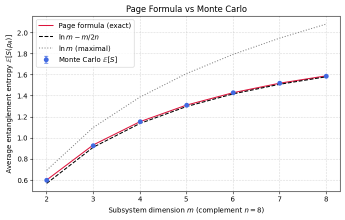

Haar Measure & Weingarten Calculus, numerical solution.
The Asymptotic Page Formula via Marchenko-Pastur
Background
Take a pure state of a bipartite system and trace out one part to obtain the reduced state of the other. Its entanglement entropy measures how mixed that reduction is, and therefore how entangled the two parts are across the cut. The Page formula answers what this entropy looks like on average when the global state is drawn at random from the Haar measure, for a subsystem of dimension \(m\) sitting inside a complement of dimension \(n\) with \(m \le n\).
The answer is that the mean entropy lies just below the largest value it could take. The maximum is \(\ln m\), reached when the reduction is exactly maximally mixed, and the average falls short of it by a small deficit. In the regime studied here that deficit is \(m/(2n)\), so the entropy approaches \(\ln m - m/(2n)\). When the complement is much larger than the subsystem the correction is tiny and a typical reduction is nearly maximally mixed.
The derivation rests on the spectrum of the random reduced state, whose rescaled eigenvalues follow the Marchenko-Pastur distribution familiar from random matrix theory. Averaging the entropy function against this spectral law, and expanding around the mean eigenvalue, produces the logarithm plus the correction in a couple of clean steps. The variance of that distribution is what sets the size of the deficit.
This result is a cornerstone of the typicality arguments that run through random states and scrambling dynamics, where Haar-random states model thermalized ones. The size of the deficit is also what distinguishes a generic random state, slightly short of maximal, from one whose reduction is exactly maximally mixed. The notebook reproduces both the exact Page value and its asymptotic form by sampling random states.
Motivation
Page’s formula gives the average entanglement entropy of a subsystem in a Haar-random state. It is the single most important result connecting random state geometry to quantum information: it tells us that typical states are nearly maximally entangled. The asymptotic form \(\mathbb{E}[S] \approx \ln m - m/(2n)\) (valid for \(m \leq n\)) combines two deep ideas: (1) the eigenvalues of a random reduced state follow the Marchenko-Pastur distribution, and (2) the entropy correction can be computed by a simple Taylor expansion.
Exercise
Derive the asymptotic Page formula
\[
\mathbb{E}[S(\rho_A)] \approx \ln m - \frac{m}{2n}
\]
by treating the eigenvalues of \(\rho_A\) as following the Marchenko-Pastur law with ratio \(c = m/n\).
Solution
Step 1: Setup
The \(m\) eigenvalues \(\lambda_j\) of \(\rho_A\) satisfy \(\sum_j \lambda_j = 1\) and \(\lambda_j \geq 0\). Introduce rescaled variables \(x_j = m\lambda_j\) so that \(\langle x \rangle = 1\). The entropy is:
\[
S = -\sum_j \lambda_j \ln \lambda_j = -\sum_j \frac{x_j}{m} \ln\frac{x_j}{m} = \ln m - \frac{1}{m}\sum_j x_j \ln x_j.
\]
In the large-\(m\) limit, the empirical spectral distribution of the \(x_j\) converges to the Marchenko-Pastur law with parameter \(c = m/n\).
Step 2: Taylor expansion
Define \(f(x) = x\ln x\). Taylor-expand around the mean \(x = 1\):
(The variance of the Marchenko-Pastur distribution with mean 1 and ratio \(c\) is exactly \(c\).)
Substituting back:
\[
\mathbb{E}[S] = \ln m - \frac{1}{m} \cdot m \cdot \frac{m}{2n} = \ln m - \frac{m}{2n}.
\]
\[
\boxed{\mathbb{E}[S(\rho_A)] \approx \ln m - \frac{m}{2n}.}
\]
Physical interpretation: The leading term \(\ln m\) is the maximal entanglement entropy, a random state is nearly maximally entangled. The correction \(-m/(2n)\) quantifies the small deficit and vanishes when \(n \gg m\) (the complement is much larger than the subsystem).
Symbolic Verification (SymPy)
Code
import sympy as spfrom sympy import harmonic, Rational, Symbol, simplify, logd_A = Symbol('d_A', positive=True, integer=True)d_B = Symbol('d_B', positive=True, integer=True)# Page formula: E[S_A] = sum_{k=d_B+1}^{d_A*d_B} 1/k - (d_A-1)/(2*d_B)# For d_A <= d_B# Approximate: E[S_A] ~ log(d_A) - d_A/(2*d_B)print('Page formula for entanglement entropy:')print(' E[S_A] = H(d_A*d_B) - H(d_B) - (d_A - 1)/(2*d_B)')print(' where H(n) = sum_{k=1}^{n} 1/k is the harmonic number')print()# Numerical check for small subsystemsimport numpy as npfor da in [2, 4]:for db in [4, 8, 16]:if da > db: continue# Exact Page formula S =sum(1/k for k inrange(db+1, da*db+1)) - (da-1)/(2*db) S_approx = np.log(da) - da/(2*db)print(f' d_A={da}, d_B={db}: S_exact={S:.4f}, S_approx={S_approx:.4f}, log(d_A)={np.log(da):.4f}')
Page formula for entanglement entropy:
E[S_A] = H(d_A*d_B) - H(d_B) - (d_A - 1)/(2*d_B)
where H(n) = sum_{k=1}^{n} 1/k is the harmonic number
d_A=2, d_B=4: S_exact=0.5095, S_approx=0.4431, log(d_A)=0.6931
d_A=2, d_B=8: S_exact=0.6004, S_approx=0.5681, log(d_A)=0.6931
d_A=2, d_B=16: S_exact=0.6465, S_approx=0.6306, log(d_A)=0.6931
d_A=4, d_B=4: S_exact=0.9224, S_approx=0.8863, log(d_A)=1.3863
d_A=4, d_B=8: S_exact=1.1531, S_approx=1.1363, log(d_A)=1.3863
d_A=4, d_B=16: S_exact=1.2694, S_approx=1.2613, log(d_A)=1.3863
Numerical Verification
Code
import numpy as npfrom scipy.stats import unitary_groupnp.random.seed(42)print(f"{'(m,n)':>8s}{'E[S] (MC)':>10s}{'ln(m)−m/2n':>12s}{'error':>8s}")print(f"{'─'*8:>8s}{'─'*10:>10s}{'─'*12:>12s}{'─'*8:>8s}")for m, n in [(2,2), (4,4), (8,8), (16,16), (4,16), (8,64)]: D = m * n n_samples =min(10000, max(1000, 200000//D)) entropies = []for _ inrange(n_samples): psi = unitary_group.rvs(D)[:, 0] rho = np.outer(psi, psi.conj()).reshape(m, n, m, n) rho_A = np.trace(rho, axis1=1, axis2=3) eigs = np.linalg.eigvalsh(rho_A) eigs = eigs[eigs >1e-15] S =-np.sum(eigs * np.log(eigs)) entropies.append(S) E_S = np.mean(entropies) S_page = np.log(m) - m/(2*n) err =abs(E_S - S_page)print(f"({m},{n}){' '*(6-len(str(m))-len(str(n)))}{E_S:10.4f}{S_page:12.4f}{err:8.4f}")print("\nPage formula confirmed: E[S] → ln(m) − m/(2n).")
%matplotlib inlineimport numpy as npimport matplotlib.pyplot as pltfrom scipy.stats import unitary_groupnp.random.seed(0)# Fix the complement dimension n; vary the subsystem dimension m.n =8ms = np.arange(2, 9)n_samples =1200mc_mean, mc_err = [], []for m in ms: D = m * n S_list = np.empty(n_samples)for s inrange(n_samples): psi = unitary_group.rvs(D)[:, 0] rho_A = psi.reshape(m, n) @ psi.reshape(m, n).conj().T ev = np.linalg.eigvalsh(rho_A) ev = ev[ev >1e-15] S_list[s] =-np.sum(ev * np.log(ev)) mc_mean.append(S_list.mean()) mc_err.append(S_list.std() / np.sqrt(n_samples))def page_exact(m, n): D = m * nreturnsum(1.0/ k for k inrange(n +1, D +1)) - (m -1) / (2.0* n)page_vals = [page_exact(m, n) for m in ms]asymp = np.log(ms) - ms / (2.0* n)plt.figure(figsize=(7, 4.5))plt.errorbar(ms, mc_mean, yerr=mc_err, fmt='o', color='royalblue', capsize=3, label='Monte Carlo $\\mathbb{E}[S]$')plt.plot(ms, page_vals, '-', color='crimson', label='Page formula (exact)')plt.plot(ms, asymp, '--', color='black', label=r'$\ln m - m/2n$')plt.plot(ms, np.log(ms), ':', color='gray', label=r'$\ln m$ (maximal)')plt.xlabel(r"Subsystem dimension $m$ (complement $n=8$)")plt.ylabel(r"Average entanglement entropy $\mathbb{E}[S(\rho_A)]$")plt.title("Page Formula vs Monte Carlo")plt.legend()plt.grid(True, ls="--", alpha=0.5)plt.tight_layout()plt.show()

Takeaway
The average entanglement entropy lies \(m/(2n)\) below the maximal \(\ln m\), and Monte Carlo sampling reproduces both the exact Page value and its asymptotic form. Typical random states are close to maximally entangled, with a deficit that vanishes in the large-complement limit.